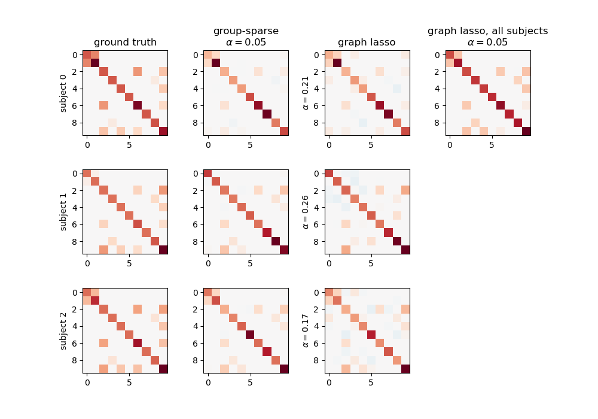

8.4.6. Connectivity structure estimation on simulated data¶
This example shows a comparison of graph lasso and group-sparse covariance estimation of connectivity structre for a synthetic dataset.
Out:
[GroupSparseCovarianceCV.fit] [GroupSparseCovarianceCV] Done refinement 1 out of 4
[GroupSparseCovarianceCV.fit] [GroupSparseCovarianceCV] Done refinement 2 out of 4
[GroupSparseCovarianceCV.fit] [GroupSparseCovarianceCV] Done refinement 3 out of 4
[GroupSparseCovarianceCV.fit] [GroupSparseCovarianceCV] Done refinement 4 out of 4
[GroupSparseCovarianceCV.fit] Final optimization
[GraphLassoCV] Done refinement 1 out of 4: 0s
[GraphLassoCV] Done refinement 2 out of 4: 0s
[GraphLassoCV] Done refinement 3 out of 4: 0s
[GraphLassoCV] Done refinement 4 out of 4: 0s
[GraphLassoCV] Done refinement 1 out of 4: 0s
[GraphLassoCV] Done refinement 2 out of 4: 0s
[GraphLassoCV] Done refinement 3 out of 4: 0s
[GraphLassoCV] Done refinement 4 out of 4: 0s
[GraphLassoCV] Done refinement 1 out of 4: 0s
[GraphLassoCV] Done refinement 2 out of 4: 0s
[GraphLassoCV] Done refinement 3 out of 4: 0s
[GraphLassoCV] Done refinement 4 out of 4: 0s
[GraphLassoCV] Done refinement 1 out of 4: 0s
[GraphLassoCV] Done refinement 2 out of 4: 0s
[GraphLassoCV] Done refinement 3 out of 4: 0s
[GraphLassoCV] Done refinement 4 out of 4: 0s
import matplotlib.pyplot as plt
# Generate synthetic data
from nilearn._utils.testing import generate_group_sparse_gaussian_graphs
n_subjects = 20 # number of subjects
n_displayed = 3 # number of subjects displayed
subjects, precisions, topology = generate_group_sparse_gaussian_graphs(
n_subjects=n_subjects, n_features=10, min_n_samples=30, max_n_samples=50,
density=0.1)
from nilearn import plotting
fig = plt.figure(figsize=(10, 7))
plt.subplots_adjust(hspace=0.4)
for n in range(n_displayed):
ax = plt.subplot(n_displayed, 4, 4 * n + 1)
max_precision = precisions[n].max()
plotting.plot_matrix(precisions[n], vmin=-max_precision,
vmax=max_precision, axes=ax, colorbar=False)
if n == 0:
plt.title("ground truth")
plt.ylabel("subject %d" % n)
# Run group-sparse covariance on all subjects
from nilearn.connectome import GroupSparseCovarianceCV
gsc = GroupSparseCovarianceCV(max_iter=50, verbose=1)
gsc.fit(subjects)
for n in range(n_displayed):
ax = plt.subplot(n_displayed, 4, 4 * n + 2)
max_precision = gsc.precisions_[..., n].max()
plotting.plot_matrix(gsc.precisions_[..., n], axes=ax, vmin=-max_precision,
vmax=max_precision, colorbar=False)
if n == 0:
plt.title("group-sparse\n$\\alpha=%.2f$" % gsc.alpha_)
# Fit one graph lasso per subject
from sklearn.covariance import GraphLassoCV
gl = GraphLassoCV(verbose=1)
for n, subject in enumerate(subjects[:n_displayed]):
gl.fit(subject)
ax = plt.subplot(n_displayed, 4, 4 * n + 3)
max_precision = gl.precision_.max()
plotting.plot_matrix(gl.precision_, axes=ax, vmin=-max_precision,
vmax=max_precision, colorbar=False)
if n == 0:
plt.title("graph lasso")
plt.ylabel("$\\alpha=%.2f$" % gl.alpha_)
# Fit one graph lasso for all subjects at once
import numpy as np
gl.fit(np.concatenate(subjects))
ax = plt.subplot(n_displayed, 4, 4)
max_precision = gl.precision_.max()
plotting.plot_matrix(gl.precision_, axes=ax, vmin=-max_precision,
vmax=max_precision, colorbar=False)
plt.title("graph lasso, all subjects\n$\\alpha=%.2f$" % gl.alpha_)
plt.show()
Total running time of the script: ( 0 minutes 2.068 seconds)